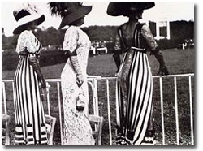

その数字は写真館での営業的に撮られた写真の数ではない。たった一人の写真好きな人間の、興味や楽しみということで撮り続けられた個人の記憶の数ということで考えてみたらどうだろう。
それも１９００年代初頭という条件付きとなれば、当時のカメラの希少性と高価だったことを想像すると、２０万枚という数がそれなりの裕福な身分でなければ到達できなかった数字であることはおおよその見当がつく。
ましてやプライベートな写真の数字となれば、単に好きなだけでなく「狂」という文字がつくくらいにのめり込んでいなければ作れなかった数であることも想像がつく。
つまり大量の写真の数が物語るものとは、写真狂のお金持ちの姿である。
しかしそれらが６８歳まで世に出ることなく、長い間本当に個人的な楽しみのためのみに撮られていたものであることを知ると、ただの金持ちとして片付ける前にその人となりをどうしても探りたくなる。
その偉大なるお金持ちのアマチュア写真家の名前は、ジャック・アンリ・ラルティーグ（１８９４〜１９８６）。パリ近郊の裕福な銀行家の家に生まれ、８歳の時に父親からカメラをプレゼントされて以来、長い間ラルティーグは家族や身近な人たちを被写体として写真を撮り続けた。
彼の写真は発表するためのものではなく、あくまで自分や家族または知人のために楽しみ楽しまれることを目的にしたものだった。だからその当時のパリの写真界の動向とはまったく無縁な形で写真は撮られ続けていたのである。
彼はカメラを通して自分だけの「日記」をつづるように撮影した。それではまるで彼が世俗と切り離された城壁の中のユートピアで、囲われた生活をしていたようなものじゃないかと感じる。
しかし彼が８歳の時に両親を撮った『私の最初のパパとママの写真』と題された心温まるものから、その後の様々に展開する膨大な量の興味の対象の記録の数々は、かなり特別なものには違いないけれど、時代をそれなりに反映させたものだった。
しかし彼にとって写真は、個人的なもの以外のなにものでもなくて、世間の評価などなんの値打ちもなかっただろうと思う。そして楽しみとして写真に昇華された様々な思い出は、そのまま墓まで持って行くような類いのものだったに違いない。
１９６３年、ラルティーグが６８歳の時にそんな彼にも転機が訪れる。
ニューヨーク近代美術館の写真ディレクターにその才能を見出だされて、４２点の写真が展示された。そしてそれらはライフ誌に１０ページにわたって特集された。

これを幸せな生涯と言わずしてなんと言おう。
人はそんな人生を、恵まれたものという一面からしか見ないかもしれない。しかし私はそれだけで彼を判断する気にはなれないのである。

写真を撮る、ということは今ならば誰にでもできることである。しかし昔は限られた人達のものだった。それでもカメラ誕生から１００年の間に、カメラも特別なものからそれなりのものに変わって、どんどん普通の人も手にすることができるようになった。
しかし時代は変わっても、ラルティーグはそのいずれでもなかった。
彼は目の前のものを面白がり、美意識に突き動かされ、実験し、記録し、というように写真をもっともシンプルな形で楽しみ続けただけなのである。
そしてそこにたまたま裕福な身の上という条件がくっついていた。だからもし彼の生まれた環境が逆に貧しかったとしても、２０万点という数には到底達しなかっただろうけれども、それでもそれなりの質と数字を残しただろうと私は思うのである。
人間やボールが飛んでいるところを止め、競馬を見に来た優雅な貴婦人の姿を捕らえ、流れるように疾走するレースカーのスピード感にワクワクし、舟遊びやテニスに興じる姿を面白がった。ダンスやボクシングも面白がった。家族が絵を描く姿やベッドでお茶を飲んだり風呂に入っている姿にまでカメラを向けた。
それらのすべては彼の無邪気な好奇心から発したものだ。その自由な遊び心こそが彼の写真の骨格をなすところだろう。偉大なアマチュアの証拠だ。
だから私は裕福さで彼を判断する前に、彼の永遠の子供のような眼差しに惹かれ、人生の瞬間の切り取り方に溜め息をつくのである。
そしてようやくそこに裕福さが重なって、彼の写真に優雅さやのびのびしたおおらかさが醸し出されるのである。お金持ちの家に生まれた「品」がにじむのである。
世界中のどのアルバムよりも、ユニークで楽しくて興味深いアルバムである。
幸せな一生を終えたラルティーグは、自分も楽しみ家族や知人も楽しませたけれど、またこのアルバムを眺める後世の私たちをも楽しませ幸せにしたのである。『写真の才能とお金持ちの幸せな出会い』を形にした希有な例かもしれない。